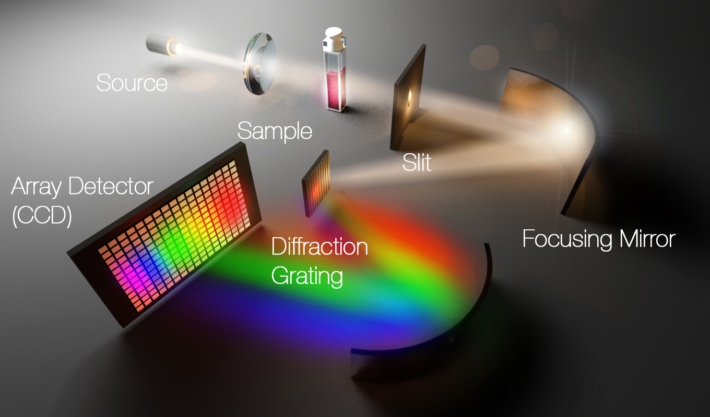

Yb:YAG Grating Spectrometer
 (Optecks)
Overview
Diagnostics are very important for a variety of reasons in experimental physics. In fact, most of experimental physics can just be though of as trying to characterize uncertainty or bias in the systems that you’re using to glean information about how the world works. For any laser which is meant to be sold or used in applications, it is critical to know how monochromatic it is. One such important use is in informing designs for compression of the pulse which is pivotal for high peak power applications like lithography, the subject associated with development of the state-of-the-art chips in our cellphones.
Project Contributions
I oversaw the Solidworks design and managed the physical construction of all the parts. I also wrote the control software in Qt creator using C++ and Mightex SDK. Additionaly I performed the testing and developed the optical fiber housing critical to eliminating auxiliary signals.
Code and Tech
- Tech: C++, Qt, Solidworks, Zeemax, Optics, Yb:YAG, Gratings, and CNCs
Duration
About two weeks of my time. An REU intern assisted in the process.